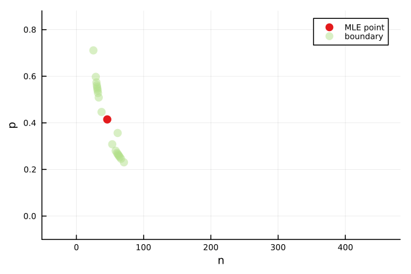
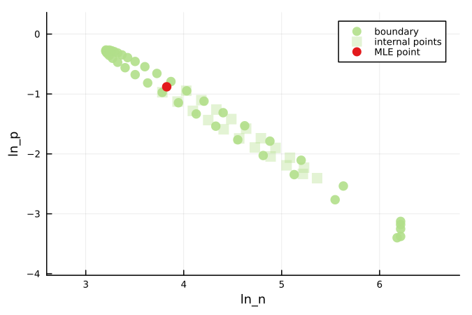

Gaussian Approximation of a Binomial Distribution
The code included in this example is compiled into a single file here.
This model is taken from an unreleased paper by the authors of the workflow [1]. The Binomial distribution is defined as:
\[ X \sim \text{B}(n,\,p),\]
where $n$ is the number of trials and $p$ is the probability of success. For sufficiently large $n$, this distribution has the following Gaussian approximation:
\[ y_i \sim p(y_i ; \theta) X \sim \mathcal{N}(np,\, \sqrt{np(1-p)}),\]
where $np$ is the mean number of successes and $\sqrt{np(1-p)}$ is the standard deviation of this mean. We take the model parameter vector as $\theta = (n,p)$.
The true parameter values are $\theta =(100, 0.2)$. The corresponding lower and upper parameter bounds are $a = (0.0001, 0.0001)$ and $b = (500,1.0)$. There is no observation time as such, but we take ten samples of the Gaussian approximation under the true parameterisation, $y^\textrm{o}_{1:I}=[21.9, 22.3, 12.8, 16.4, 16.4, 20.3, 16.2, 20.0, 19.7, 24.4]$.
Initial Setup
using Random, Distributions
using LikelihoodBasedProfileWiseAnalysisModel and Likelihood Function Definition
distrib(θ) = Normal(θ[1] * θ[2], sqrt(θ[1] * θ[2] * (1 - θ[2])))
function loglhood(θ, data)
return sum(logpdf.(distrib(θ), data.samples))
end
function predictfunction(θ, data, t=["n*p"]); [prod(θ)] endInitial Data and Parameter Definition
# true parameters
θ_true = [200.0, 0.2]
# Named tuple of all data required within the log-likelihood function
data = (samples=[21.9, 22.3, 12.8, 16.4, 16.4, 20.3, 16.2, 20.0, 19.7, 24.4],)
# Bounds on model parameters
lb = [0.0001, 0.0001]
ub = [500.0, 1.0]
θnames = [:n, :p]
θG = [50, 0.3]
par_magnitudes = [100, 1]LikelihoodModel Initialisation
model = initialise_LikelihoodModel(loglhood, data, θnames, θG, lb, ub, par_magnitudes)Evaluating a Concave Boundary
This example is particularly interesting because it contains a very concave bivariate boundary - the IterativeBoundaryMethod thus becomes very appropriate to use. However, evaluting this many points may be prohibitive on higher dimensional models.
bivariate_confidenceprofiles!(model, 200,
method=IterativeBoundaryMethod(20,20,20, 0.5, 0.1, use_ellipse=true))Visualising the Progress of the IterativeBoundaryMethod
We can visualise the progress of the IterativeBoundaryMethod using plot_bivariate_profiles_iterativeboundary_gif.
using Plots; gr()
Plots.reset_defaults(); Plots.scalefontsizes(0.75)
format = (size=(450, 300), dpi=150, title="",
legend_position=:topright, palette=:Paired)
plot_bivariate_profiles_iterativeboundary_gif(model, 0.2, 0.2;
markeralpha=0.5, color=2, save_as_separate_plots=false, save_folder=joinpath("docs", "src", "assets", "figures", "binomial"), format...)
Coordinate Transformation
This is an example that particularly benefits from a coordinate transformation to improve the regularity of the log-likelihood. A natural log transformation is particularly appropriate.
Redefining Functions
Here we define the new log-likelihood and prediction functions which define the backwards mapping from our logged parameterisation to the original parameterisation. We also define a function which specifies the forward parameter transformation, from the original to the logged parameterisation.
function loglhood_Θ(Θ, data)
return loglhood(exp.(Θ), data)
end
function predictfunctions_Θ(Θ, data, t=["n*p"]); [prod(exp.(Θ))] end
function forward_parameter_transformLog(θ)
return log.(θ)
endTransforming Parameter Definitions
To update the parameter bounds we can use transformbounds_NLopt, which solves an integer program to determine how the old bounds map to the new bounds given the specified transformation.
lb_Θ, ub_Θ = transformbounds_NLopt(forward_parameter_transformLog, lb, ub)
Θnames = [:ln_n, :ln_p]
ΘG = forward_parameter_transformLog(θG)
par_magnitudes = [2, 1]LikelihoodModel Initialisation
model = initialise_LikelihoodModel(loglhood_Θ, data, Θnames, ΘG, lb_Θ, ub_Θ, par_magnitudes)Re-evaluating the Bivariate Boundary
Re-evaluating the bivariate boundary of the log-likelihood function after the transformation reveals a much more convex shape.
bivariate_confidenceprofiles!(model, 40, method=RadialMLEMethod(0.15, 1.))
using Plots; gr()
plots = plot_bivariate_profiles(model, 0.2, 0.2; include_internal_points=true, markeralpha=0.9, format...)
display(plots[1])